Shorts 02 · Giày · 3 storyboard để so
BẢN 3Đề xuất · 46,6 giây · chờ anh duyệt
- Giày len xám, màu đục, dáng hiền
- Ảnh đường phố tối, kiểu ảnh stock
- Không có chữ, không có ý tưởng
- Giày chạy bộ lưới trắng, đế dày, điểm nhấn cam san hô, chữ PROMER ở gót
- Mỗi ý tưởng một kiểu chụp + một màu nền riêng
- Chữ to 2–4 từ dựng trong AE (font Promer)
- Vẫn một đôi giày từ trang shop tới cảnh cuối
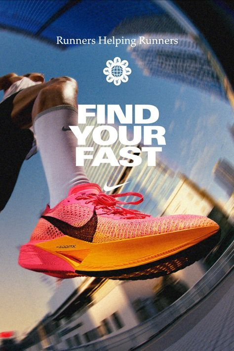
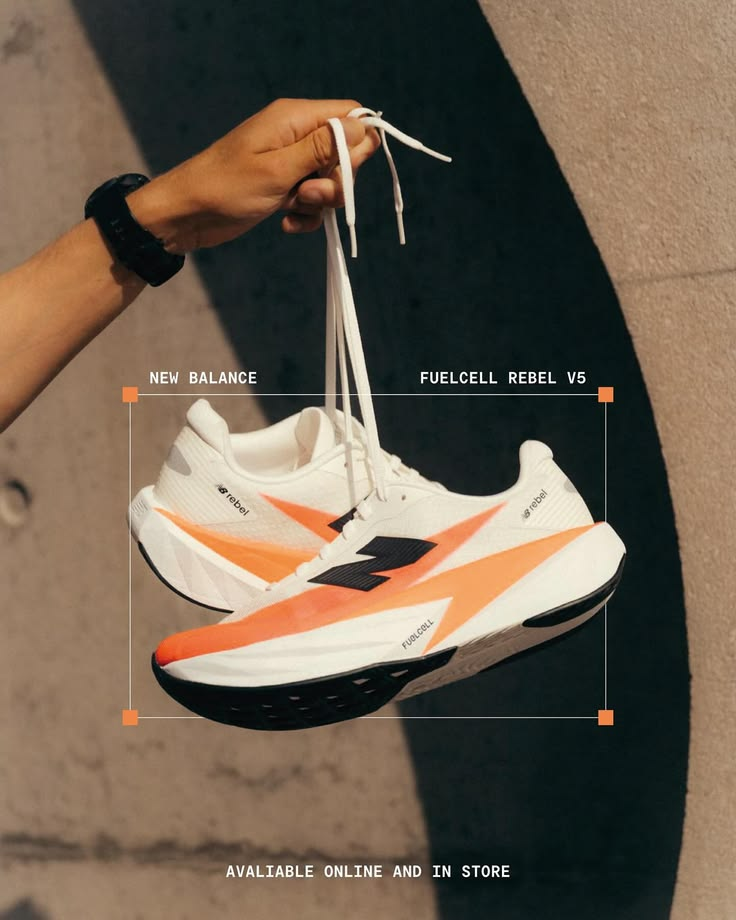
Hướng sản phẩm (mẫu)4 ý tưởng quảng cáo (cùng một đôi giày)
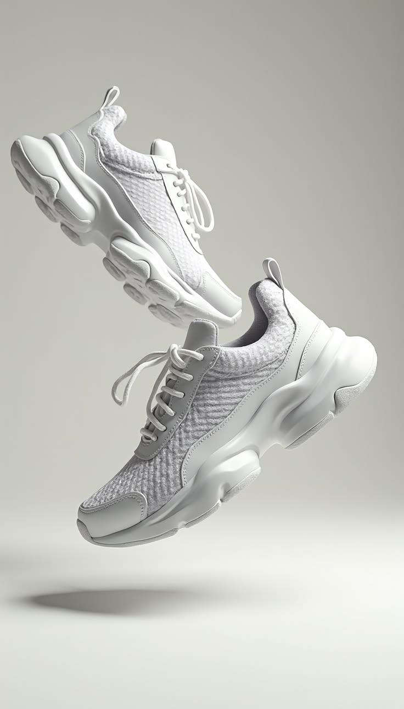
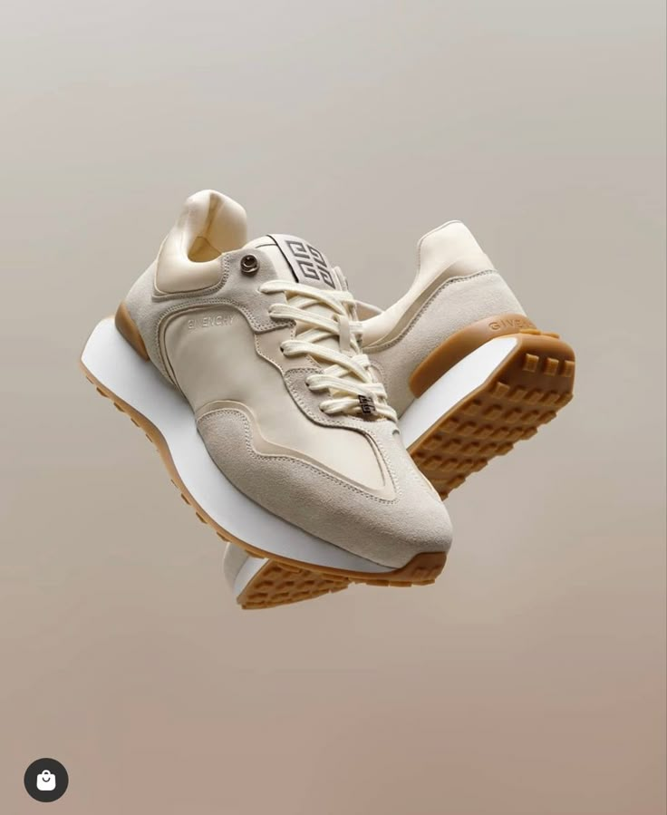
Giày bay · nền cam san hô
Một đôi lơ lửng, một chiếc nghiêng như đang rơi, nền một màu, bóng mềm. Rơi đúng drop.
Chữ trên hình: "BOUNCE IN EVERY STEP."
Emma: "And now… it moves."
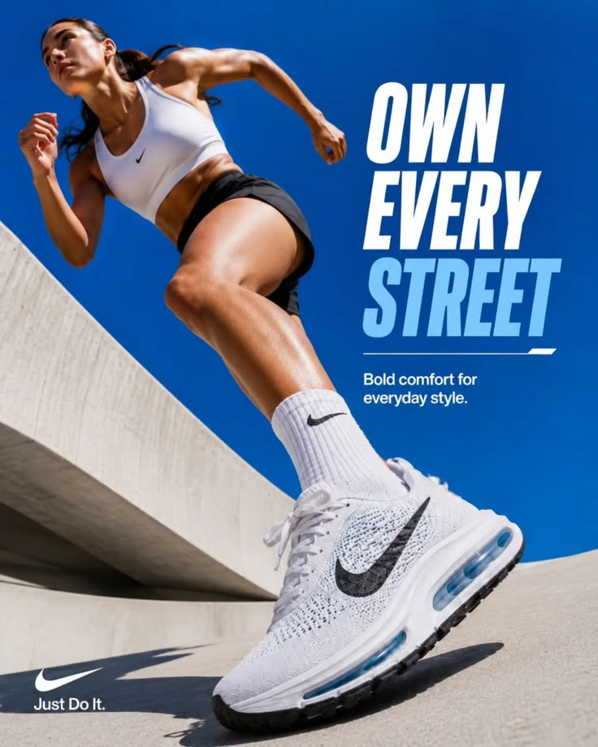
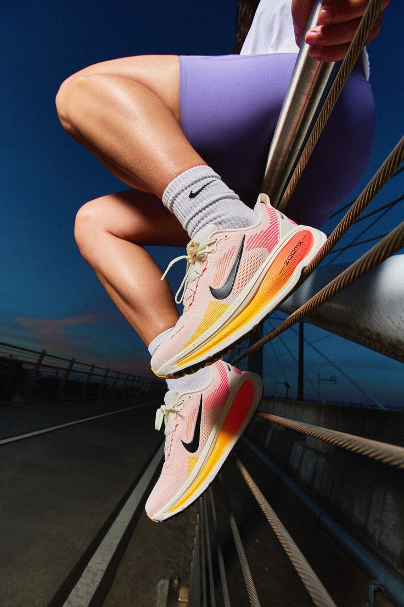
Góc máy thấp · trời xanh
Nhìn từ dưới lên, bàn chân mang giày bước qua khung, nắng gắt, màu no.
Chữ: "OWN EVERY STREET."
Emma: "Same shoe. A new idea for every ad."
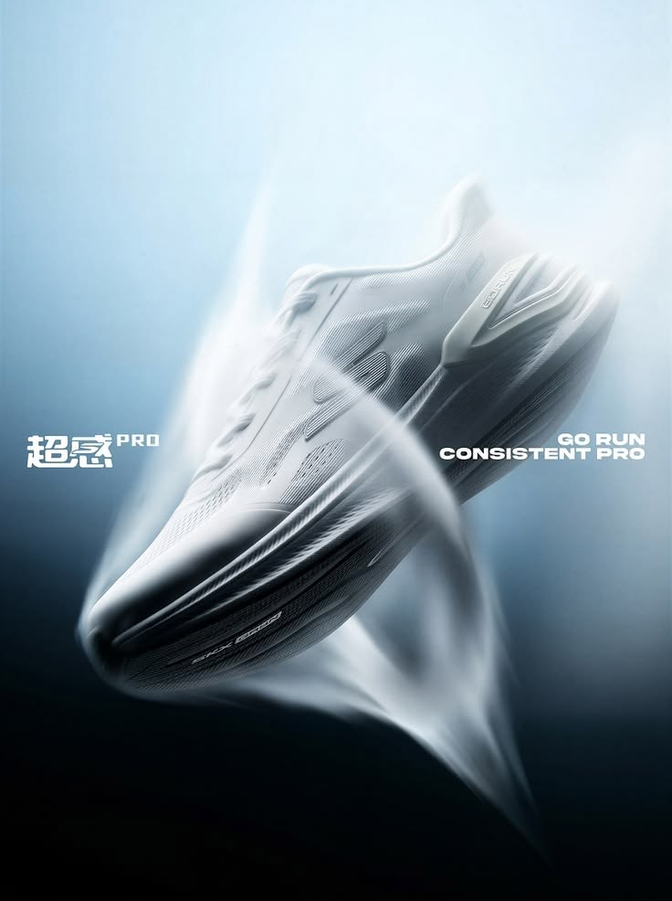
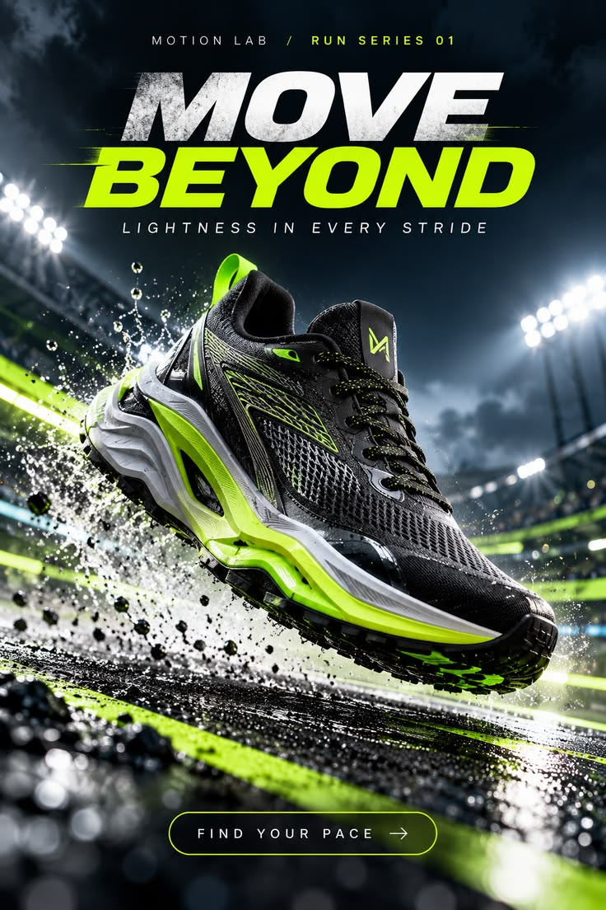
Nhoè tốc độ · nền tối
Giày lướt ngang, vệt nhoè trắng cam phía sau, giọt nước bắn, giày sắc nét. Khớp tiếng trống.
Chữ: "RUN LIGHT. MOVE FAST."
Emma: "Want more energy?"
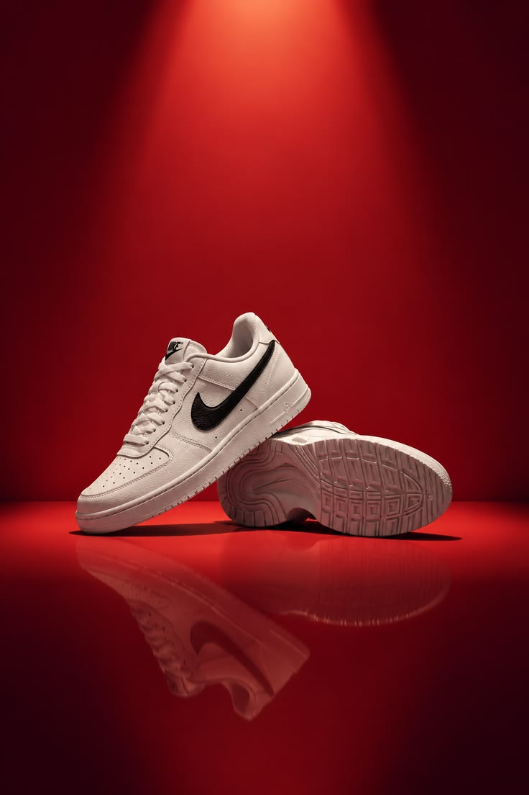
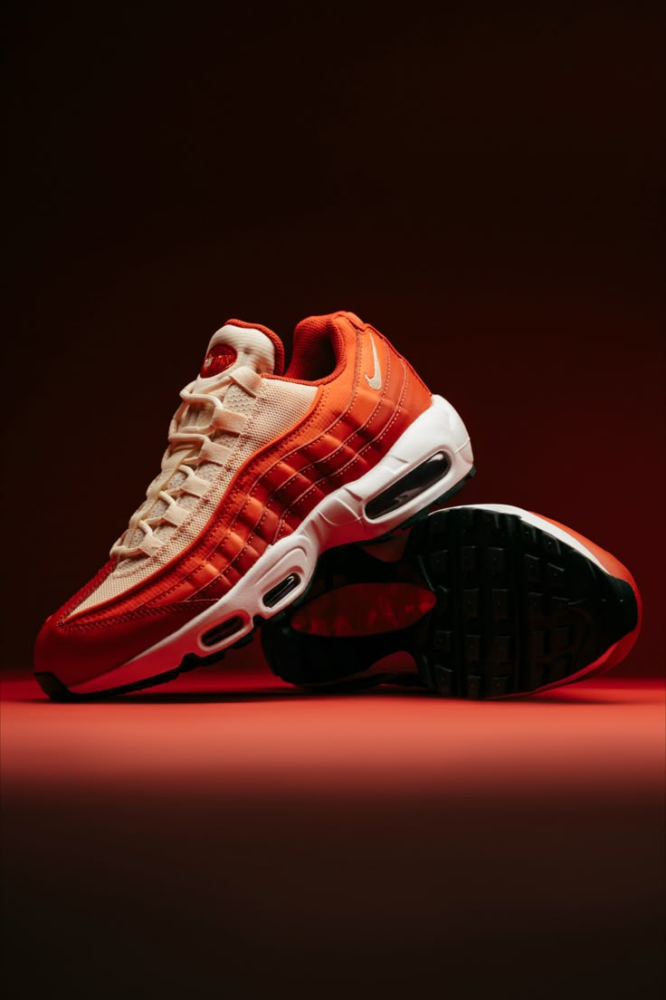
Studio đỏ · sàn phản chiếu
Một chiếc đặt trên sàn đỏ bóng, đèn rọi từ trên tạo vòng sáng. Cảnh "sang" trước lưới so sánh.
Chữ: "BUILT TO BE SEEN."
Emma: "Or make it premium."
Chữ to dựng trong AE (mẫu bố cục)
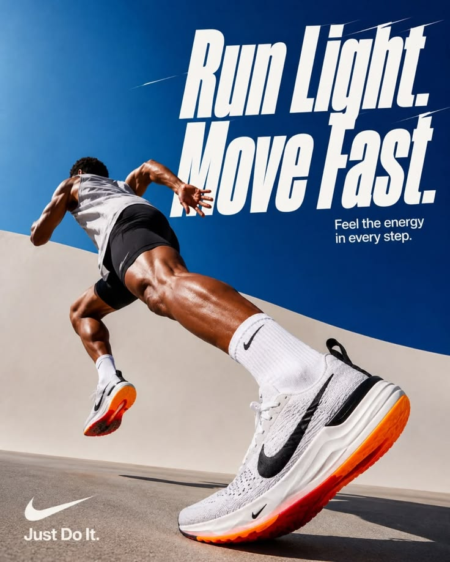
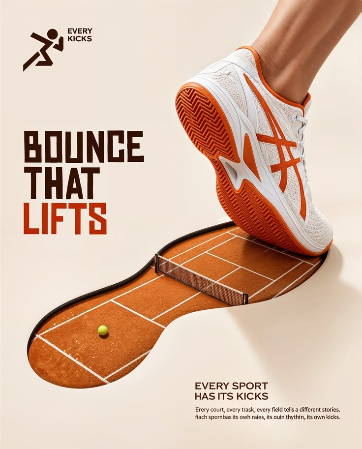
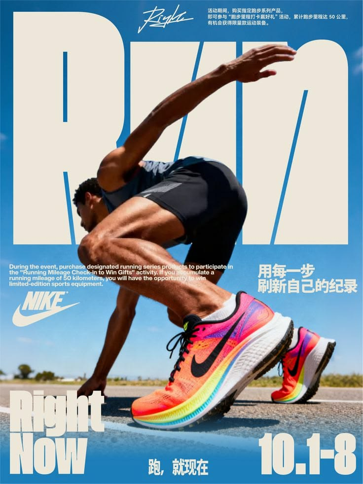
Chữ 2–4 từ, rất to, chiếm nửa khung, giày đè lên chữ. Font Inter đậm của Promer, chữ trắng hoặc tối theo nền. Không để AI viết chữ vào ảnh (AI hay sai chính tả).
Dòng thời gian bản 3 (giữ khung bản 2, thay hình)
| Giây | Cảnh | Hình | Emma đọc | Tiếng hiệu ứng |
|---|---|---|---|---|
| 0–1,6 | Mở đầu | Thẻ ảnh giày trắng giữa khung, 4 thẻ quảng cáo xoè ra sau · "1 product photo → 4 ad ideas" | màn trập mềm | |
| 1,6–4,1 | Trang shop | Trang shop toàn ảnh tĩnh (bản thật: shop nhãn Promer), chạm chọn đôi giày trắng | "Shopify sellers, this is how most shoe ads look." | chạm UI |
| 4,1–8,55 | Promer AI · Ad Animation | Giày bay vào ô tải ảnh, gõ ý tưởng, bấm Generate, lao vào giày | "One photo. One idea in Promer AI." | whoosh · tiếng dồn lên |
| 8,55–11,75 | Drop · Ý tưởng 1 | Giày bay nền cam san hô + chữ "BOUNCE IN EVERY STEP." | "And now… it moves." | tiếng nện trầm |
| 11,75–15,3 | Trước / sau | Thẻ trên: ảnh sản phẩm nền trắng · thẻ dưới: ý tưởng 1 | "From a still photo, to an ad that stops the scroll." | sột soạt |
| 15,3–18,5 | Ý tưởng 2 | Góc thấp trời xanh + "OWN EVERY STREET." | "Same shoe. A new idea for every ad." | |
| 18,5–21,7 | Ý tưởng 3 | Nhoè tốc độ + "RUN LIGHT. MOVE FAST." | "Want more energy?" | tiếng nện bị nén |
| 21,7–25,3 | Ý tưởng 4 | Studio đỏ, vòng đèn + "BUILT TO BE SEEN." | "Or make it premium." | |
| 25,3–28,8 | Lưới 4 ý tưởng | 4 thẻ hiện theo nhịp, mỗi thẻ một màu nền | "One photo. Four ads. Which one would you test?" | |
| 28,8–32,0 | Trang sản phẩm | Khung điện thoại, ảnh chính chạy ý tưởng 1, chạm "Add to cart" | "Then put it right back on your store." | chuông xác nhận |
| 32,0–35,7 | Montage | 4 ý tưởng cắt nhanh theo trống | "No studio. No photoshoot. Just your product photo." | |
| 35,7–41,1 | How it works | 3 bước | "Pick a product photo. Write one idea. Get your video ad." | giấy lật |
| 41,1–46,6 | Outro | Logo Promer · "Try Ad Animation → promer.ai" | "Make yours with Promer AI. Try Ad Animation at promer dot ai." | lấp lánh dâng |
Cần trước khi dựng: Gemini tạo 6 ảnh theo BRIEF_ANH_v3_GiayMoi_cho_Gemini.md (1 ảnh sản phẩm nền trắng, 4 ảnh ý tưởng, 1 cận gót). Hai câu Emma mới cho ý tưởng 3, 4 ("Want more energy?", "Or make it premium.").
| A · Một cú tiếp đất | B · Một đôi giày, ba mặt đất | C · Lật ngược | |
|---|---|---|---|
| Angle | Ảnh điện thoại là đủ | Một sản phẩm, nhiều quảng cáo để test | Quảng cáo AI làm đúng thì không ai đoán ra |
| Câu mở gọi đúng tệp (0–3 giây) | "Shopify sellers, this is how most shoe ads look." (9 chữ, khoảng 2,8 giây) | "Shopify sellers: one shoe, one phone photo." (7 chữ, khoảng 2,8 giây) | "Shopify sellers: studio shoot? Big budget?" (6 chữ, khoảng 2,6 giây) |
| 2 giây đầu | Ảnh giày trên sàn gạch (cái "trước") | Ảnh giày trên sàn gạch + chữ "1 photo" | Quảng cáo đã xong, giày nổ đất (cái "sau") |
| Đỉnh ở drop | Giày tiếp đất, quay chậm | Tiếp đất 3 lần, 3 mặt đất, cắt theo nhịp | Phát lại cú tiếp đất ở góc máy thấp |
| Kết | Trước / sau chia đôi | Lưới 3 ad: "Which one would you test?" (mời bình luận) | 3 khung hình 9:16 · 1:1 · 4:5 cho Meta |
| Credit Promer | 8 + 48 = 56 | 8 + 48 + 2 ảnh 16 = 72 (3 video thật: 152) | 8 + 48 = 56 |
| Mạnh / yếu | Rõ, dễ hiểu nhất · mở bằng ảnh xấu nên 2 giây đầu yếu | Nói đúng nhu cầu test nhiều ad · 2 mặt đất sau là ảnh tĩnh, dễ lộ khác chất | 2 giây đầu mạnh nhất (research: mở bằng thành phẩm) · phải giữ được câu hỏi tới lúc lật |
AMột cú tiếp đất
 F1 · 0,0–2,5For Shopify sellers👆
F1 · 0,0–2,5For Shopify sellers👆Trước: trang shop toàn ảnh tĩnh
Trang danh sách sản phẩm cuộn chậm lên: ảnh nào cũng đứng yên. Ở 2,0 giây ngón tay chạm một đôi giày, ảnh đó nhấc ra khỏi lưới và bay sang F2."Shopify sellers, this is how most shoe ads look." (lời vắt qua nhát cắt 2,51, hết khoảng 2,8)
Cắt cứng ở 2,51
or upload image
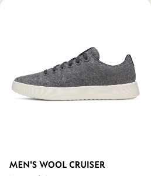
Thả ảnh vào Promer AI
Thả vào ô, vượt nhẹ rồi về chỗ."Same shoe. One idea in Promer AI..."
Viết ý tưởng
Máy lùi rất chậm."...now it hits the ground." (kết trước 6,95)
Velocity ramp lao vào tâm giày
Sau: cú tiếp đất
Khoảnh khắc lớn nhất, đúng drop.Cắt cứng ở 9,27
Cận nhãn
Ảnh tĩnh khung cận.Cắt cứng ở 10,32
BEFORETrước / sau
Đúng khuôn Short "trước / sau".Mờ sang outro ở 12,65
Outro
Logo vào theo luật logo, không đổi hình logo.Ảnh F4 · F5 Gemini đã tạo · anh chốt 28/10: bộ 2 + bộ 3
Đúng ý tưởng "Hit the ground": cú tiếp đất có lực, khớp drop. Gót có chữ PROMER.
Đời thường, thật như ảnh lifestyle. Đủ cặp F4 + F5, gót có chữ PROMER. Ít lực hơn cho cú drop.
Có nước bắn đúng lúc chạm, hợp drop. Chưa có ảnh F5 cùng bối cảnh.
Sáng, sạch, khói bụi gợi độ êm. Chưa có F5.
Hiệu ứng A: đẩy máy · thả có vượt · velocity ramp · quay chậm · phóng cận · quét chia đôi · logo.
BMột đôi giày, ba mặt đất
Một tấm ảnh
Máy đứng yên, chữ hiện theo nhịp 0,17 và 1,87."Shopify sellers: one shoe, one phone photo."
Cắt cứng ở 2,51
Ba ý tưởng
Thẻ bật ra có vượt nhẹ."Three ideas in Promer AI..." · "...three ads to test."
Velocity ramp lao vào giày
Ad 1 · đất đen
Cú lớn nhất, đúng drop.Match cut: giày giữ nguyên chỗ trên màn khi đổi mặt đất
Ad 2 · nước
Một nhịp, nước bắn.Match cut ở 10,32
Ad 3 · cát
Máy trôi ngang chậm.Thu nhỏ vào lưới ở 12,65
Lưới 3 ad
Mời bình luận 1, 2 hay 3."Which one would you test?"
Outro
Bình luận ghim: "Comment 1, 2 or 3".Hiệu ứng B: chữ theo nhịp · thẻ bật có vượt · velocity ramp · match cut đổi mặt đất · nước bắn · máy trôi ngang · thu vào lưới. Cần quyết: Ad 2 và 3 là ảnh tĩnh (72 credit) hay video thật (152 credit). Ảnh tĩnh đặt cạnh video dễ lộ khác chất.
CLật ngược
Quảng cáo xong (cái "sau")
Đẩy máy vào chậm."Shopify sellers: studio shoot? Big budget?"
Tua ngược
Chạy ngược video Promer, nhanh dần."Nope."
Lộ ra: ảnh điện thoại
Khựng lại, khung chụp hiện ra."One phone photo..."
Một ý tưởng
"...and one idea in Promer AI."Velocity ramp vào giày
Phát lại, góc thấp
Cùng khoảnh khắc, góc khác.Cắt cứng ở 9,27
Cận nhãn
Cắt cứng ở 10,323 khung cho Meta
Tách khung, bật theo nhịp."Every size you need."
Outro
Logo vào theo luật logo.Hiệu ứng C: đẩy máy · tua ngược · khựng + khung chụp · velocity ramp · đổi góc máy thấp · phóng cận · tách 3 khung. Rủi ro: F1 và F5 cùng một video Promer; muốn F5 thật sự khác góc thì phải tạo thêm 1 video góc thấp (thêm 48 credit), không thì F5 dùng đoạn khác của cùng video (đoạn chạm đất) và phóng lại khung.
Đây là bản để hình dung, không phải hình cuối. Mọi khung dùng ảnh template T02 (có logo Nike) để thấy màu và bố cục; bản thật là giày nhãn Promer tạo trong Promer AI. Màu nước (B-F4) và cát (B-F5) là ảnh template đổi màu, chỉ để hình dung không khí.